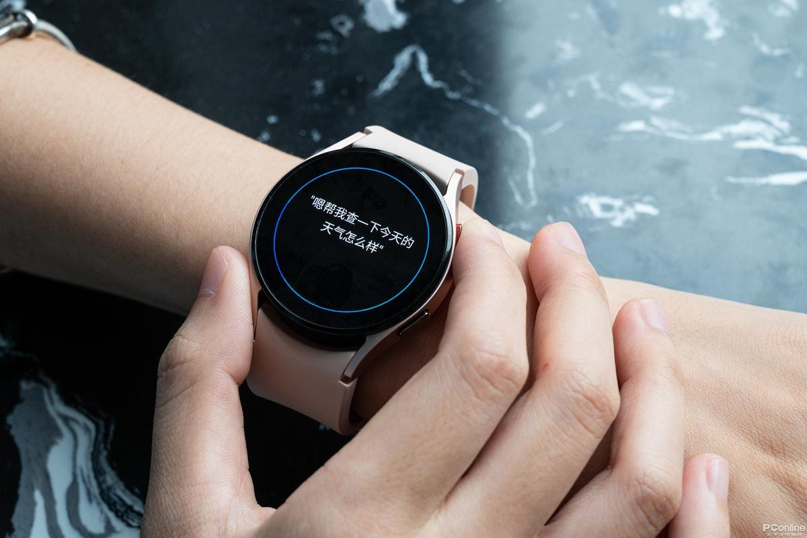

三星 Galaxy Watch 4

Wear OS 阵营代表作，体脂检测腕上首发。
客观评测
Galaxy Watch 4 搭载 Exynos W920 芯片，操作流畅度在 Wear OS 阵营中领先。1.4 英寸 Super AMOLED 屏阳光下读屏无压力。健康方面引入 BIA 生物电阻抗传感器，可测体脂率、骨骼肌等成分，并支持 ECG 心电与血氧监测。实测典型续航约 40 小时，GPS 连续记录约 10 小时。5ATM 防水可戴游泳，是功能完整的全能型智能手表。
主观点评
Watch 4 是"像传统手表的智能表"的优秀答卷：圆形表盘、旋转表圈交互，戴出去不显突兀。体脂检测虽需双手配合略显仪式感，但每天固定时间测量能看出趋势变化。通知回复、支付宝离线支付、独立听歌都很顺手，代价是每两天一次的充电习惯。对安卓用户来说，它是最省心的全能选择之一。
优点与不足
- AMOLED 屏幕显示效果顶级
- 体脂、心电、血氧健康监测齐全
- 应用生态丰富，通知交互流畅
- 续航约两天，需要频繁充电
- 部分健康功能仅限三星手机
- 不支持 iPhone
参数规格
| 屏幕 | 1.4 英寸 Super AMOLED 圆形屏，蓝宝石玻璃 |
|---|---|
| 传感器 | 光学心率、血氧、ECG 心电、BIA 生物电阻抗（体脂） |
| 定位 | GPS / 北斗 / GLONASS / Galileo |
| 防水 | 5ATM + IP68，支持泳池游泳 |
| 电池/续航 | 约 40 小时（典型使用） |
| 系统 | Wear OS Powered by Samsung |
| 兼容性 | Android 6.0 及以上（不支持 iOS） |
| 处理器 | Exynos W920，1.5GB RAM + 16GB 存储 |
| 表壳 | 40mm / 44mm 铝合金 |
| 重量 | 约 30 克（40mm） |